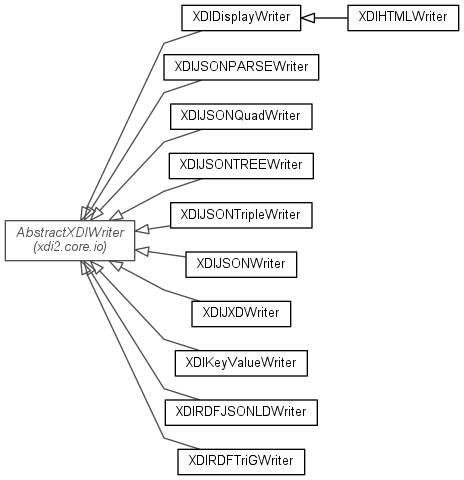

JavaScript is disabled on your browser.
Skip navigation links
Overview
Package
Class
Use
Tree
Deprecated
Index
Help
Prev Package
Next Package
Frames
No Frames
All Classes
Package xdi2.core.io.writers

Class Summary
Class
Description
XDIDisplayWriter
XDIHTMLWriter
XDIJSONPARSEWriter
XDIJSONQuadWriter
XDIJSONTREEWriter
XDIJSONTripleWriter
XDIJSONWriter
XDIJXDWriter
XDIKeyValueWriter
XDIRDFJSONLDWriter
XDIRDFTriGWriter
Skip navigation links
Overview
Package
Class
Use
Tree
Deprecated
Index
Help
Prev Package
Next Package
Frames
No Frames
All Classes
Copyright © 2017. All rights reserved.